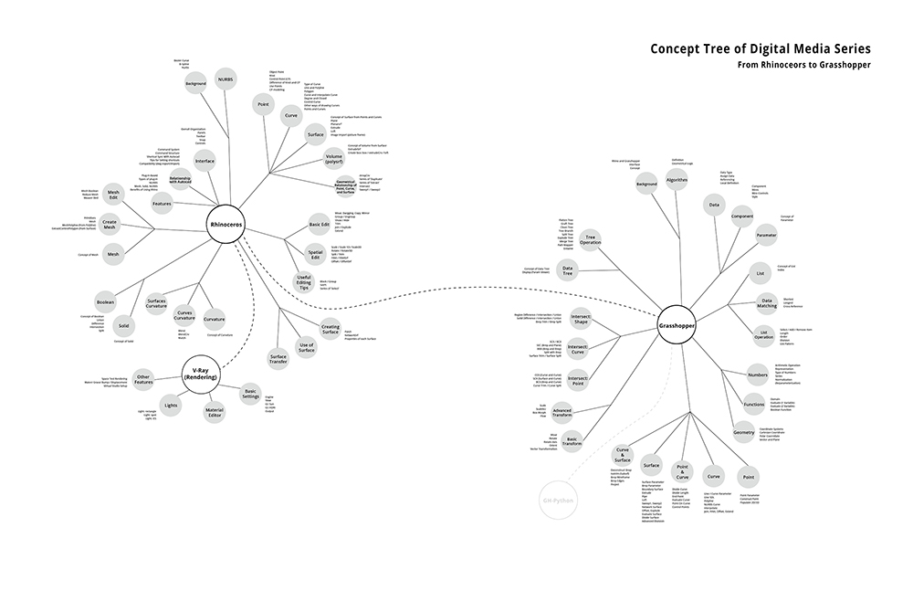
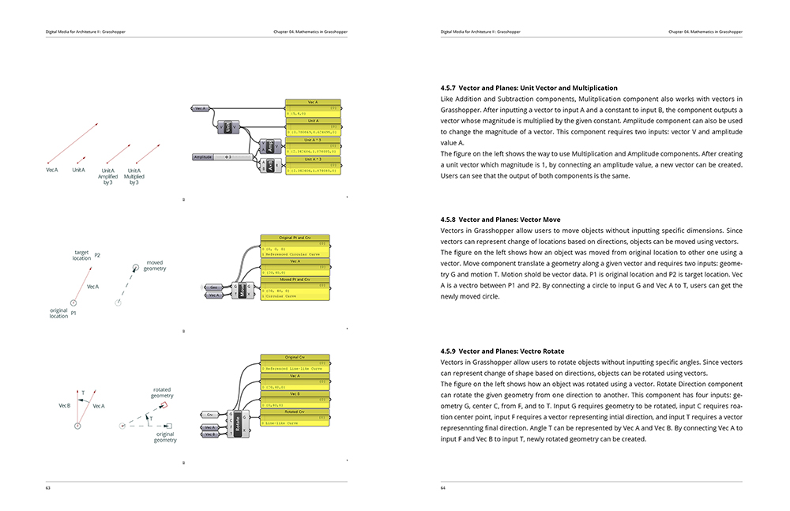
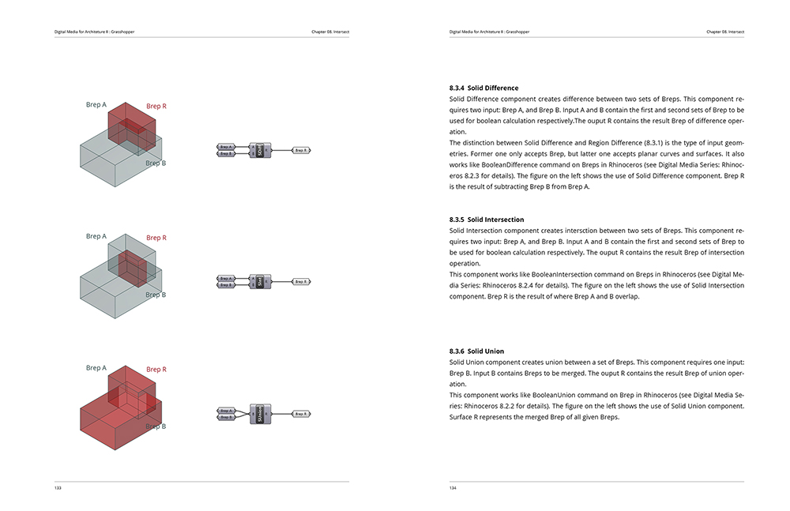
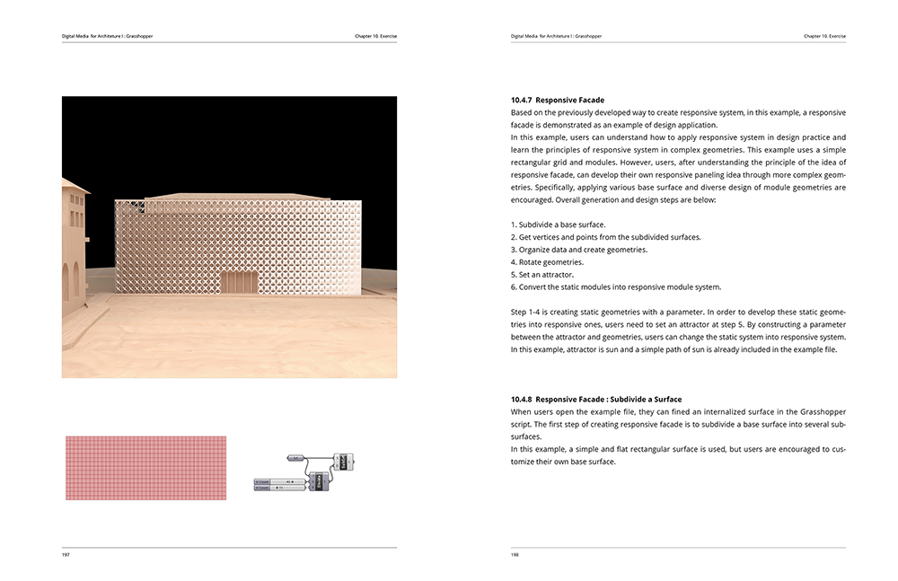

It is not unusual, nowadays, to find scaled building models with complex geometries of their facades and laser-burn marks in architecture schools. Even, 3D-printed models are also frequently found. Although there are prevalent critiques that nowadays architecture students are focusing form itself rather than space quality, creating complex forms that cannot be developed in practice, it is true that these days’ student can handle geometries well due to many computer software. This book focuses on this part, more free, efficient, and accurate geometric expression and creation, rather than on what space is and how it is organized.
Some people said it is getting easier to learn diverse digital design software due to easily accessible media in this digital era. However, because of overflow of information in the media, paradoxically, it is getting harder for beginners to learn various digital tools, questioning where and how they can start it.

The main motivation of Digital Media Series (DMS) is needs for a textbook with systematically organized and structured knowledges about digital software in architecture. DMS recognizes the challenges beginners face when learning a new software like Grasshopper. While in reality the tool is not that difficult to learn with proper learning materials, beginners often spend too much time stuck on using a particular hurdle. The series was written to alleviate such challenge. The first book of DMS, Rhinoceros, introduces 3D modeling concepts as well as modeling habits, logics, and tips, and techniques, interweaving them with geometrical relationships. Specifically, the book promotes the mantra for a structured manipulation of geometry: from points to curves, from curves to surfaces, and from surfaces to volumes.

This book, Grasshopper as the second book of DMS, also has similar configuration, contents categories, and organization to the first book based on the mantra. Furthermore, comparing and contrasting similar features in Rhinoceros, this book explains components in Grasshopper so that users who can handle geometries in Rhinoceros can smoothly transfer their modeling knowledges, habits, and logic from explicit to implicit modeling. This book aims to avoid learning concepts of algorithmic design or visual scripting through examples, and is designed to learn basic principles of Grasshopper and apply them to design. Although Grasshopper has a very well-organized forum based on collective intelligence where users can ask and answer questions, and there are various tutorials that are easy to access through web and various media, I believe that this book can fulfill the beginners’ needs a textbook presenting an outline of Grasshopper and help users develop their ability to handle geometries through algorithmic idea.

This book is not meant to be the only reference for learning Grasshopper. Users should use the book in combination with the wealth of public resources such as forums, tutorials, and documentations created by other advanced users. For any part of the book that the users may need more detailed information on, users should refer to the official documentation created by the software developer (McNeel) and the user forum of Grasshopper.

You can buy this book on Amazon® on the right column.